AI adoption · App
85%
of tasks added by voice, photo or chat
Up from 50%

Nestify is a voice-first, multimodal AI copilot for families with multiple children: one smart display for the whole family, and one app for parents. Families simply speak, snap a photo or forward an email, and Nestify takes care of the rest, from start to finish. I joined in March 2026 as the founding designer, owning the AI agent and multimodal experiences along with visual design, and helped the team build AI design tools.
The biggest shift was AI adoption: tasks added by AI went from 50% to 85%, and families went from handing off 2 tasks a week to 9.5. Nestify secured 1,000+ pre-orders, and the work supported the company’s seed round.
My deliverables
Collaborators
2 Product Designers, 1 UX Researcher
PM, Engineering & Hardware teams
In the U.S., 32.9 million families are raising children under 18. When two or more of them are school age, every day is a puzzle: school, activities, chores, pickups and meals, for several kids at once. The kids can’t yet manage their own schedules, so parents carry it all, a lot of logistical and mental load on top of their own lives.
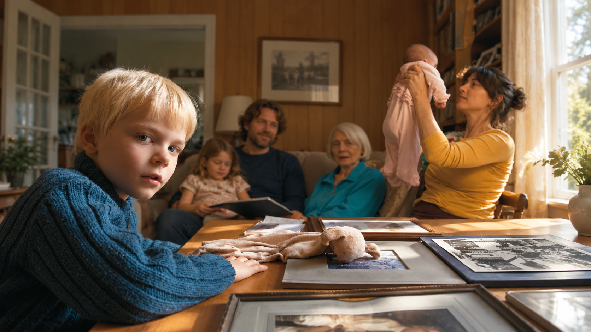
AI is becoming part of the home. Some products focus on running the smart home, others help families coordinate. But in all of them, AI stays passive: it waits to be asked. That is the gap Nestify set out to bridge, an AI that is proactive and built for the family.
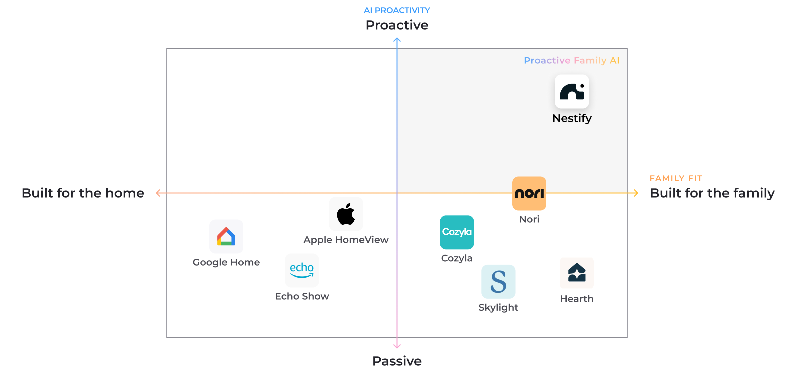
How might AI become part of the family, not just part of the home?
#1 · FeelGiving the AI a face
#2 · UseDriving AI adoption
#3 · UseKeeping every family member in sync
My AI design principle is to design AI with human verbs: describe what it does the way a person would do it. For Nestify, that became one simple question: what would a good butler do? Each challenge below comes back to it.
Showcase
Nestify lives in two places: a shared smart display for the home, and a mobile app for parents. Say it out loud, snap a photo, or forward an email, and both stay up to date.
Challenge #1 · Feel
Nestie is the face of Nestify’s AI: a blue jay, a bird that builds nests and looks after its family. Starting from the founder’s first sketch, I redesigned it into a hardworking, knowledgeable little bird with glasses, but also a little imperfect and humorous, just like a member of the family.
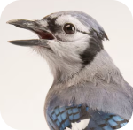
A blue jay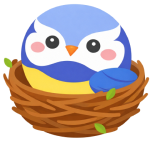
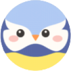
The founder’s v1Character design
I started with hand-drawn sketches, then used AI to polish them and explore variations until the character was set. Along the way I defined its visual principles, palette, proportions and style, and turned them into a reusable AI workflow, so anyone on the team can generate Nestie and keep it on model. For motion, I generate start and end frames with AI, turn them into video, test them in the prototype, then rebuild the ones that work in Rive as editable animations.
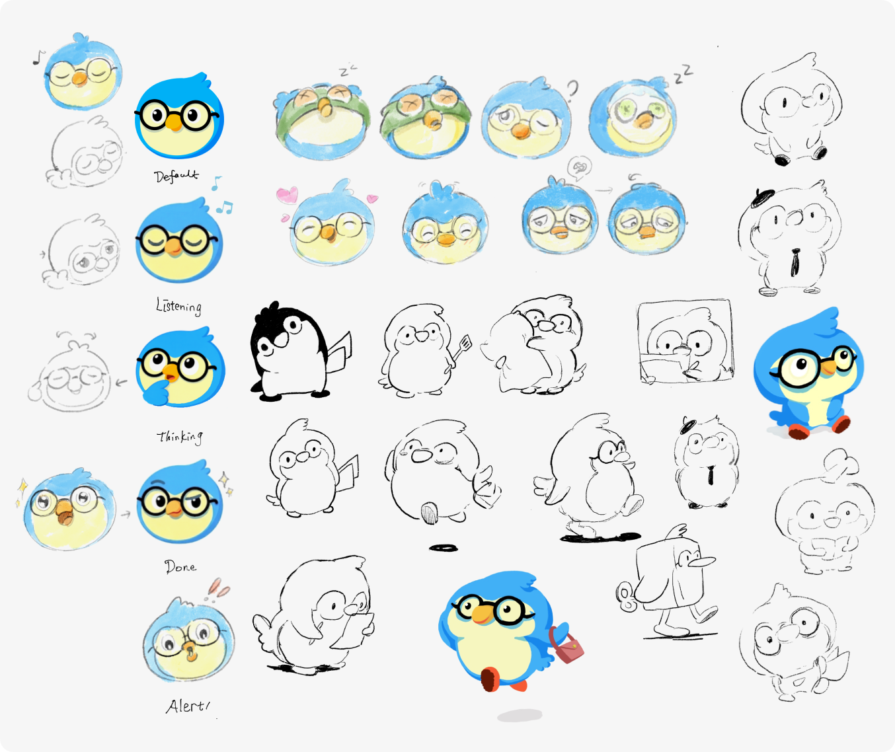
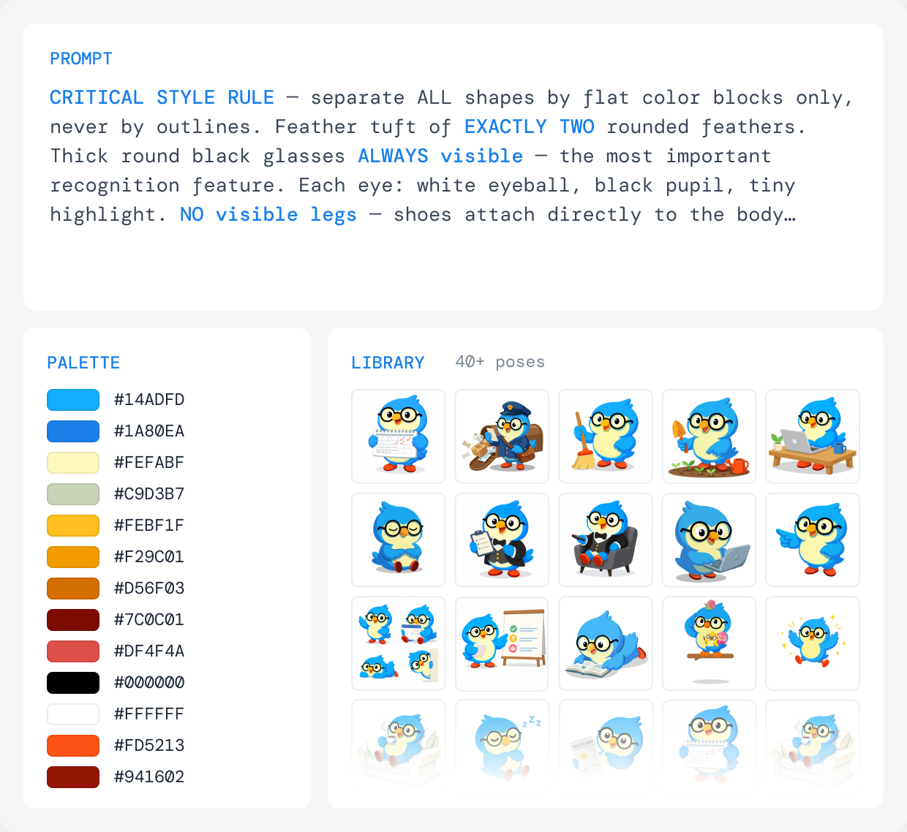
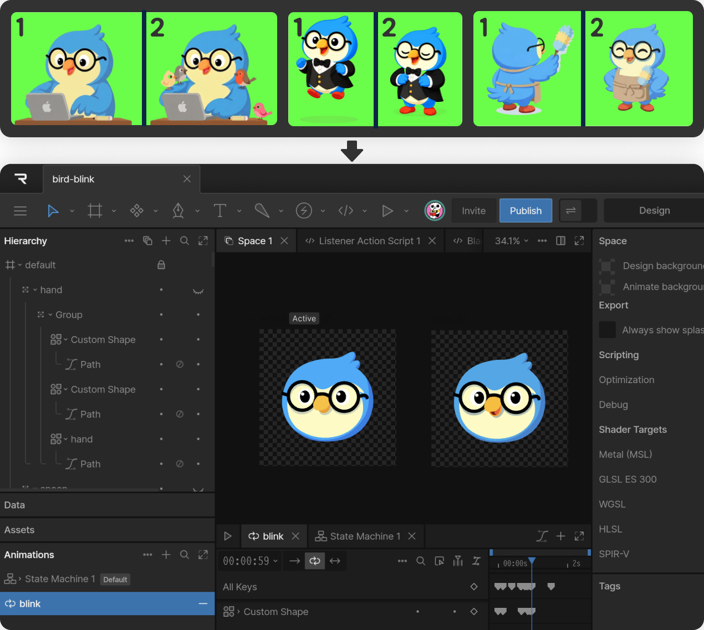
Challenge #2 · Use
With a face in place, the harder part is use. Some parents already use AI at work; most still run family life on conversations, notebooks and memory. How might both turn to AI?
Assumption
My initial assumption was bold: what if we removed the traditional nav bar and made AI the primary way to use the product? Would families turn to AI more often? To explore it, I designed two ways to present AI: an AI bubble with contextual suggestions, and a chat bar for direct input.
What I learned from user testing
In testing, parents immediately asked, “Where can I find the calendar and the to-do lists?”, even though both were one tap away on the home page. Two things became clear. Familiar navigation patterns are part of parents’ mental model of an app. And AI is great for taking action, but families still need visual interfaces to see and understand their information; not everything fits inside a chat window, and a calendar can’t live in one. AI is for doing; screens are for seeing.
Testing also showed something encouraging: even hesitant parents warmed to AI once they experienced its value. One mom carried a handwritten notebook everywhere. I asked her to take a photo, and Nestify turned her notes into calendar events in seconds; that was her aha moment. Our backend data backed it up: families who tried AI once tended to stay.
81%
of users who tried voice or photo during onboarding were still active on day 7.
Design decisionDesign principleA good butler earns trust by showing value, not forcing help.
Instead of forcing families toward AI, I made it the easier choice and let them move at their own pace, with three changes:
#1 · AI on every page
The nav bar came back, so families find their way around as they expect, and the AI bubble stays on every page, with suggestions that change as they move around.
#2 · A first try in onboarding
Parents connect one calendar and answer one question about what matters most to their family; onboarding then walks them through a personalized voice request, so they feel the value of AI right away.
#3 · A tip after adding by hand
Even the manual form has an AI shortcut at the top, and when someone finishes adding by hand, Nestie gently suggests, “Next time, just tell me. It’s faster.”
Result
Overall, AI adoption grew: tasks added by voice, photo or chat went from 50% to 85%, and each family went from handing off 2 tasks a week to 9.5.
One finding stood out. With both options on the Tasks page, the [+ Add] button at the top and Nestie’s bubble at the bottom, 91% of new items came in through the bubble. AI had changed how families behave, so the [+ Add] button was removed.
AI adoption · App
85%
of tasks added by voice, photo or chat
Up from 50%
AI hand-offs · App
9.5
tasks handed off to AI per family, every week
Up from 2

Manual input
91% of new items added through AI
Challenge #3 · Use
As more gets handed to Nestie, each update has to reach the right person, kids included. This was also where I started designing the smart display from zero to one, for two reasons: younger kids don’t have their own phones, so they need a shared place to stay in sync; and hardware gave the business a clear path to revenue.
Assumption
We started with the proven pattern from successful competitors: everything for everyone, on one shared screen. Then V2 upgraded the design system, brighter for the screen, playful for kids and warm for the home.

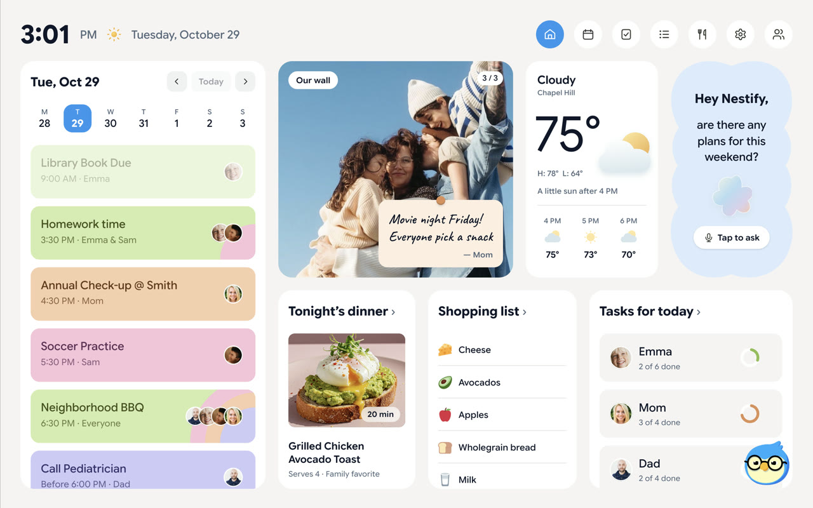
Home

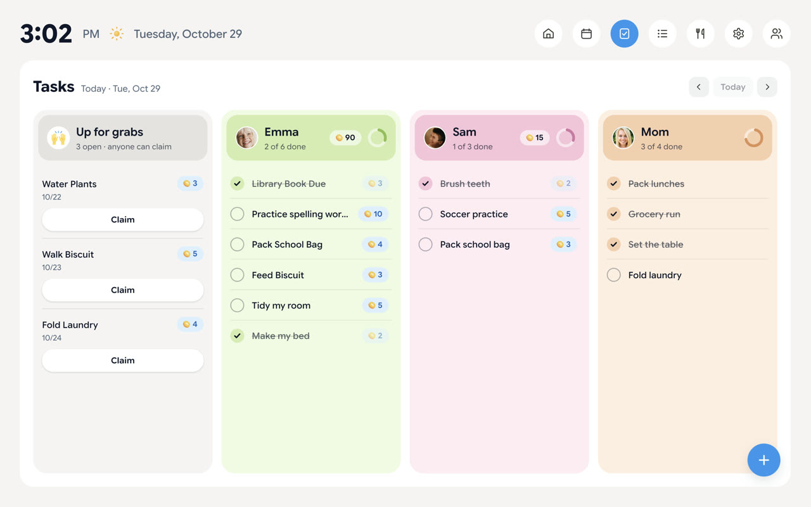
Tasks

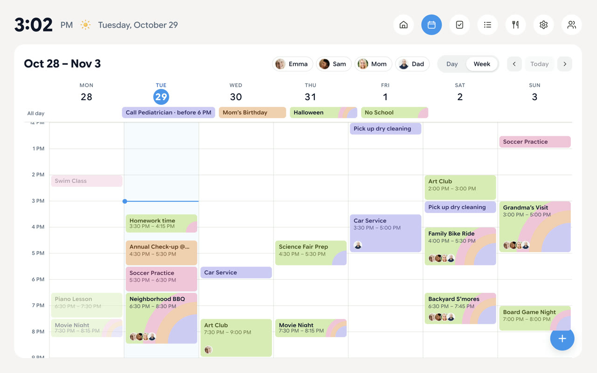
Calendar
What I learned from user testing
Families said it felt familiar. But interviews and backend data from 20 pilot families told another story: parents mostly used the display to check what’s happening, since they create things on their phones; kids focused on completing their own tasks, while keeping an eye on their siblings.
Parents run the whole family.
Kids care about themselves and their siblings.
What the backend data showed · 20 pilot families
Design decisionDesign principleA good butler knows what matters most to each person.
Kids see what’s coming up, their tasks and rewards; parents see what everyone is doing today.
Design and validate with limited time
I proposed the smallest testable change: one new entry in the nav bar, and nothing else changed. The full vision is a customizable page for everyone, but that takes much longer to build, so I proposed starting with one default personal page.

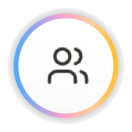
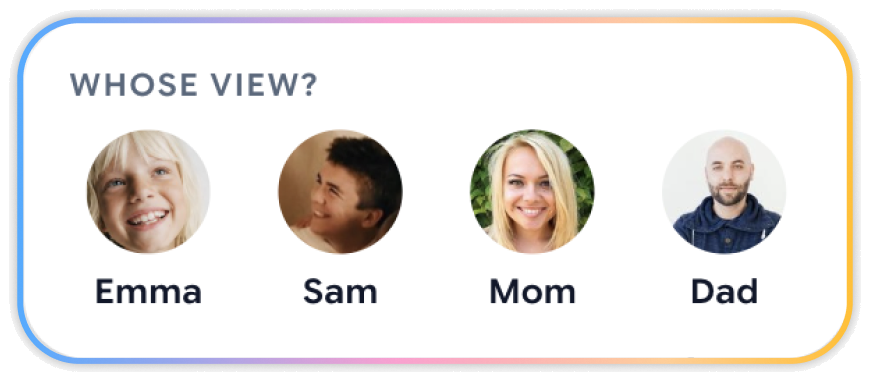
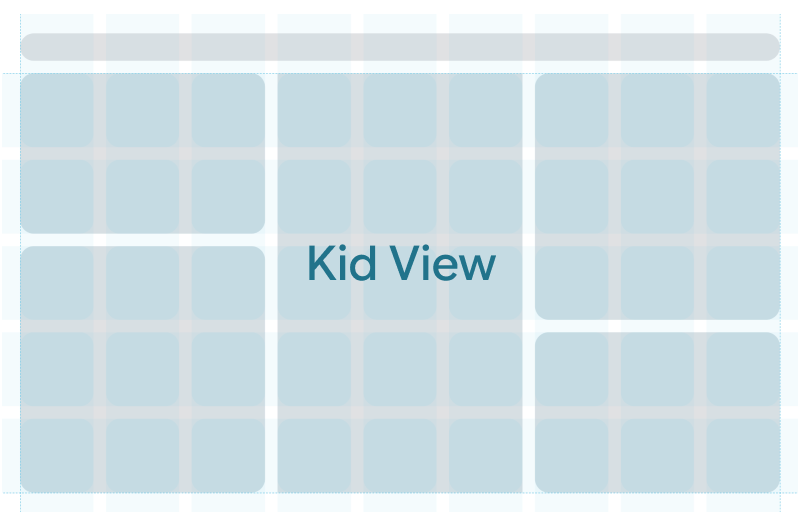
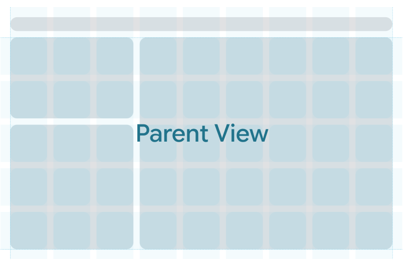
Design and validate with limited data
With just 12 pilot families, I combined usage data with interviews. Usage data showed what’s used most, which decided what goes on each page. Interviews showed the order people look, which decided where things go: Next up first. And to keep it readable from across the room, I set a 9 × 5 grid on the 15.6″ display, with a minimum readable size, larger touch targets and more icons for kids.
Result
Families acted far more on their own pages than on the shared board, and asked to make them even more their own.
7-day test · 12 pilot families
5× more actions on personal pages
than on the shared board, per family
“Nestie knows it’s me.”
“I wish I could customize my page a bit more.”
Next step
Families asked to make their pages their own, so we’re now co-creating the widget system with them. With our user researcher, I built a set of simple widgets and gave parents and kids a blank canvas to arrange their own page. They can drag widgets around, and if one doesn’t exist yet, they ask AI to make it. In a way, families are vibe coding their own page, and what they build tells us what to build next.
Beyond the product
I built AI tools that help our team move from idea to production code, across three stages of the design process: ideate, iterate and adapt.
They have been live for four months, and every designer on the team uses them daily, iterating faster and contributing code more safely.
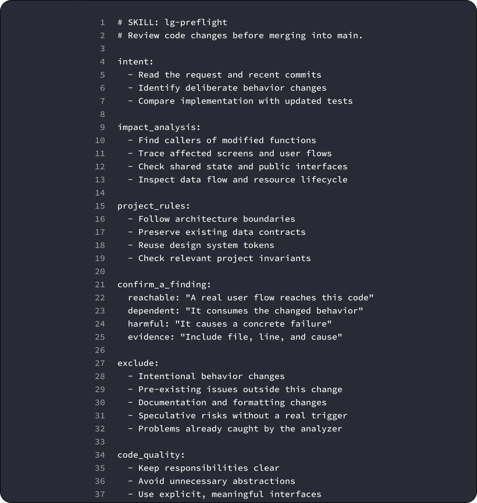
Impact
1000+
Demand · Display
families pre-ordered the display
Helped close the seed round
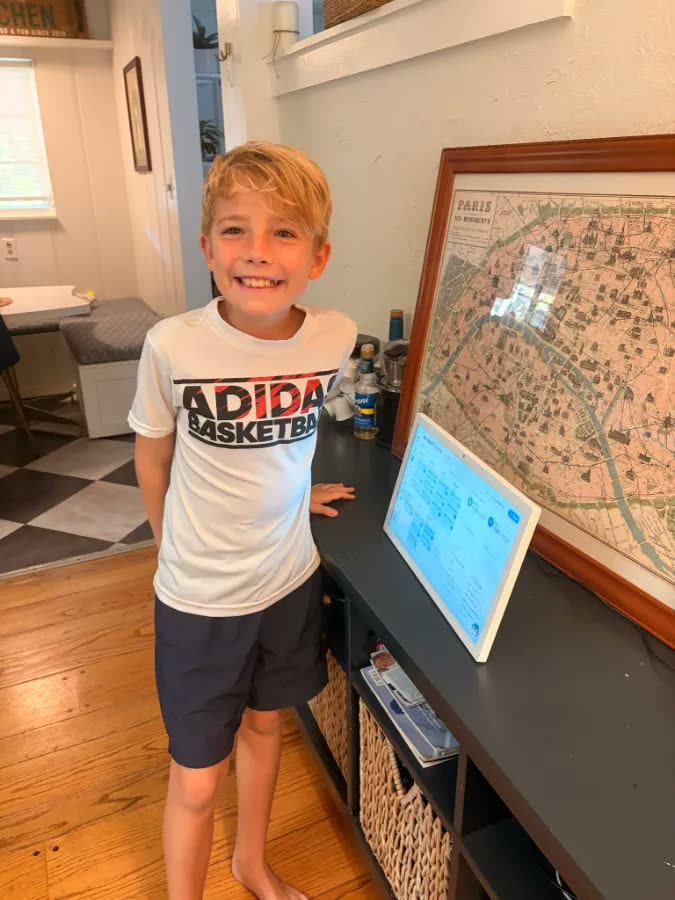
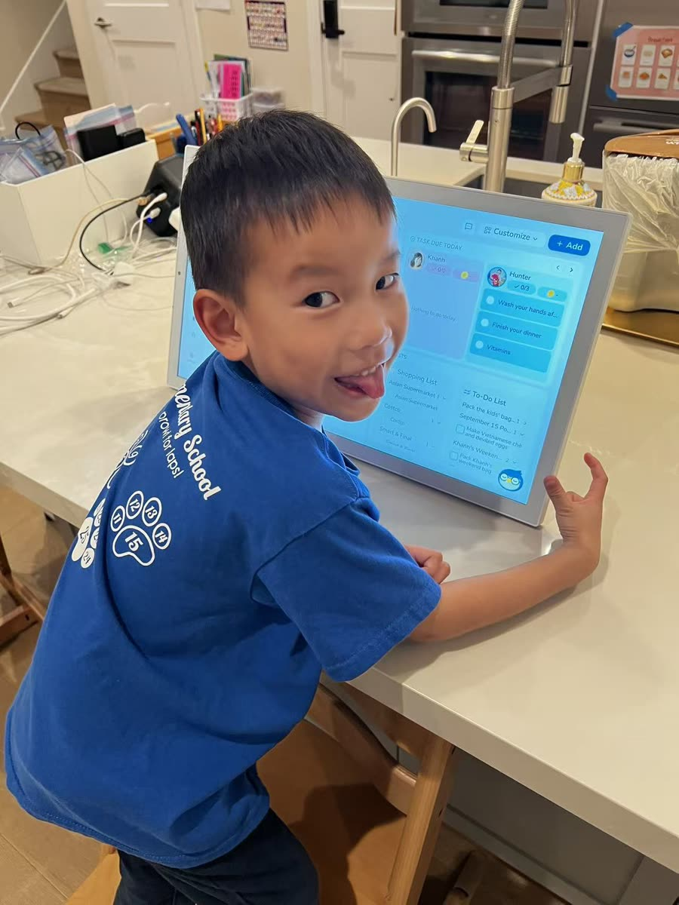
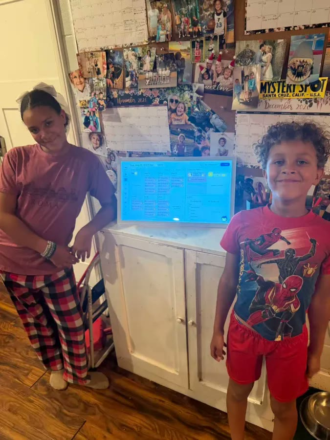
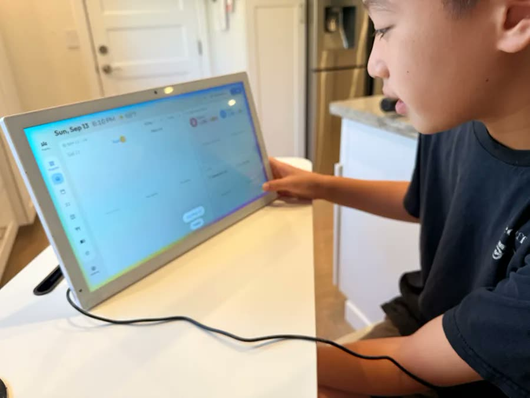
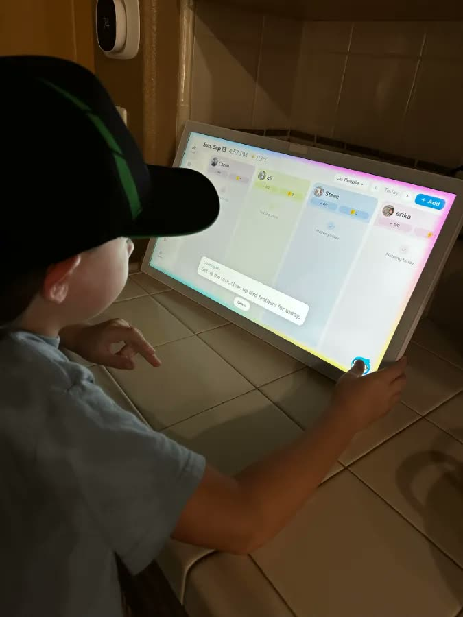
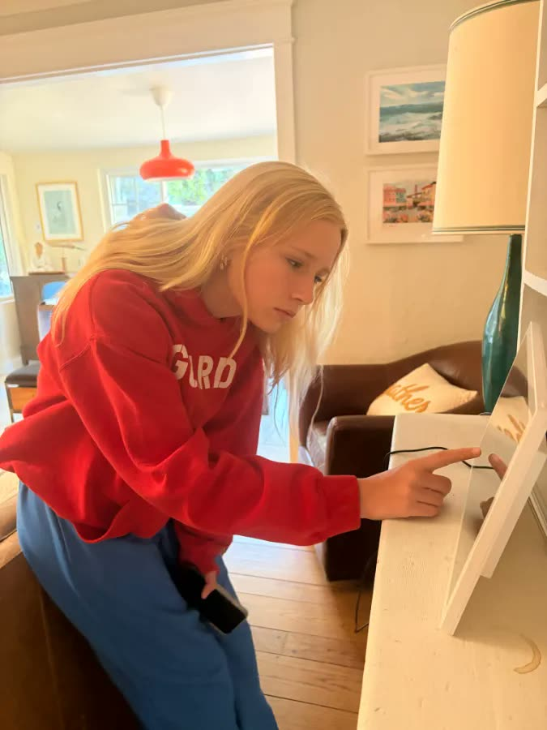
Real Nestify families, shared with permission.
Nestify taught me how to move fast in ambiguity: instead of waiting for a complete roadmap, I learned to make decisions from small, early data and iterate quickly with real families.
It also changed how I approach AI design. The most natural AI experiences come from observing how people actually talk and interact with one another, and turning that into a design that balances the different needs and aesthetics of both kids and parents.